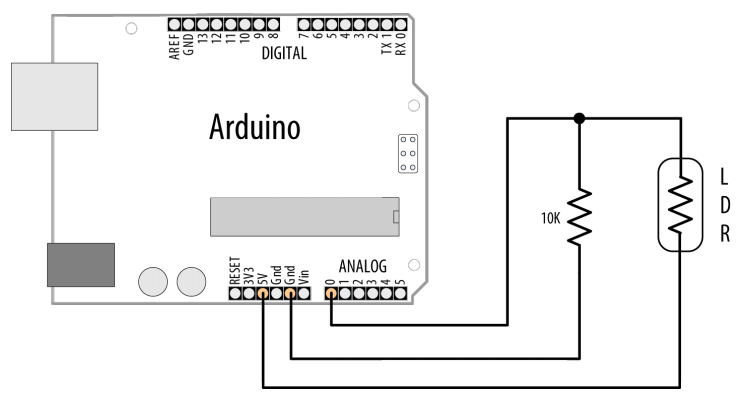
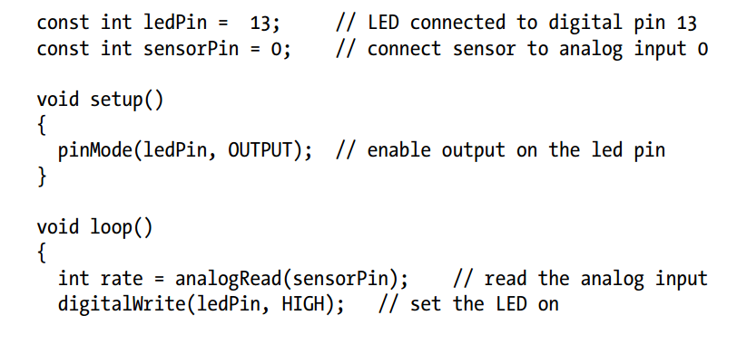
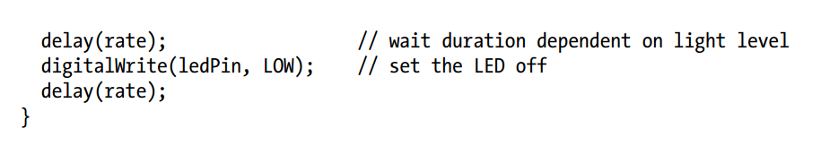

Detecting the Change in Light using ADC and LDR
You want to detect changes in light levels. You may want to detect a change when something passes in front of a light detector or to measure the light level—for example, detecting when a room is getting too dark.
The easiest way to detect light levels is to use a light dependent resistor (LDR). This changes resistance with changing light levels, and when connected in the circuit shown in Figure it produces a change in voltage that the Arduino analog input pins can sense.
  The circuit for this recipe is the standard way to use any sensor that changes its resistance based on some physical phenomenon . The voltage on analog pin 0 changes as the resistance of the LDR changes with varying light levels. A circuit such as this will not give the full range of possible values from the analog input—0 to 1,023—as the voltage will not be swinging from 0 volts to 5 volts. This is because there will always be a voltage drop across each resistance, so the voltage where they meet will never reach the limits of the power supply. When using sensors such as these, it is important to check the actual values the device returns in the situation you will be using it. Then you have to determine how to convert them to the values you need to control whatever you are going to control.
The LDR is a simple kind of sensor called a resistive sensor. A range of resistive sensors respond to changes in different physical characteristics. Similar circuits will work for other kinds of simple resistive sensors, although you may need to adjust the resistor to suit the sensor.
Choosing the best resistor value depends on the LDR you are using and the range of light levels you want to monitor. Engineers would use a light meter and consult the data sheet for the LDR, but if you have a multimeter, you can measure the resistance of the LDR at a light level that is approximately midway in the range of illumination you want to monitor. Note the reading and choose the nearest convenient resistor to this value.